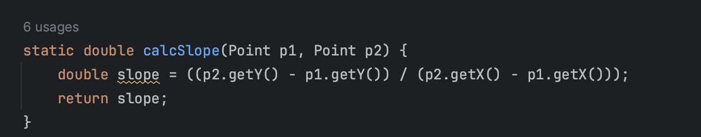

Encapsulation is when the programmer restricts certain fields or methods to a certain scope. Some examples include public, protected, and private
Public is visible from anywhere both in and outside of the class
Protected is visible to only the class and its subclasses
Private is only visible in the class in which it is declared and initialized
Fields contain the classes data that is either primitive (float, doubles, ints) or other abstract data types and with encapsulation, all fields are either private or protected.

These are examples of fields being private and protected. The syntax for fields is always scope dataType Name.
Accessor or getter methods are return methods that gets the value of selected field. Almost all fields will have a getter method.
They are setup by having scope dataTypeOfField getField and must have a return statement to return the value.

This code above is an accessor/getter that returns y=mx+b.
Mutator or setter methods are void methods that update the value of the field which is passed in as a parameter.
They are setup by having scope void setVariableName (dataType varName)

This code above sets the value of x to the parameter x's value.
Static methods are not methods that belong to an instance, but instead the class which means that no matter what object is calling the method, the method will stay the same.
This is setup by doing scope static void methodName()
This code above has the static keyword which means that no matter who calls it, the method will remain the same.
Other methods may be used to help the interaction between different objects. The only way for objects to interact with other objects is to accept the object that is being interacted as a parameter.